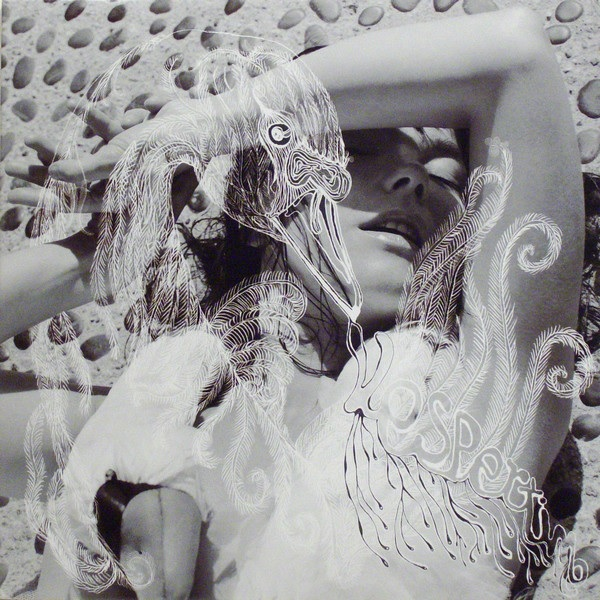
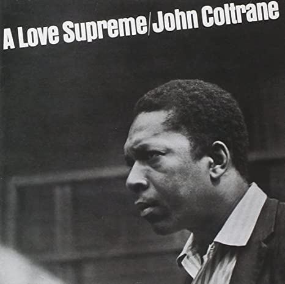
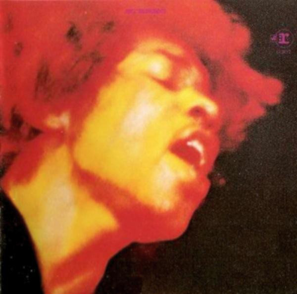
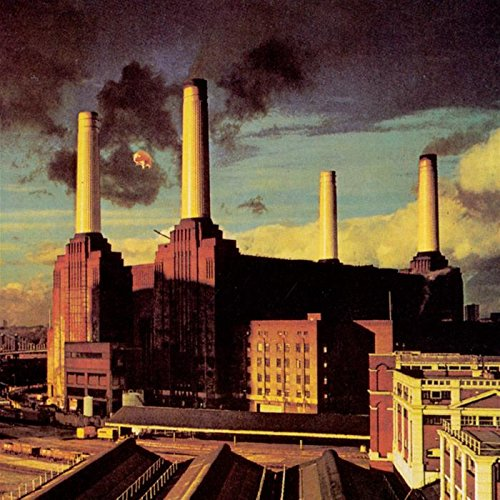

Julian's Secret Domain - Guess the Album
Back to home page
About this game
Adapted from a two-player pen-and-paper game, in which each player picks an album from the top 100 of the RateYourMusic all-time album chart and writes a review for it, regardless of whether the player has listened to the album in question. The other player then attempts to guess the artist and album title.
Rules
- No using your browser's "Inspect Element" feature
If you are caught cheating then you may choose to inflict self-punishment by sitting in the nearest vacant corner of the room you're occupying and subjecting yourself to the full duration of William Basinski's "The Disintegration Loops" in unbroken silence.
The position of each album at the time of the review's writing is shown in parentheses next to the album title upon the user's revealing its identity.
Album 1
Microscopic soundscapes applied to dramatic and sensual electronic pop balladry. The vocalist's intimacy to the microphone is apparent throughout the twelve tracks totalling fifty-six minutes. While some may deem it boring or overly reliant on a sonic gimmick, the tiptoeing instrumentation and unconventionally structured songwriting sticks the landing. A classic of turn-of-the-millennium electronica.
Björk - Vespertine (#45)
The writer had heard this album.
Album 2
The figurehead of jazz's most celebrated family comes through with an absolute slam dunk of a spiritual odyssey. Their instrumental chops are at the fore of the short runtime's weaving passages, with the B-side of the LP a grand highlight in the 60s jazz canon. Their descendants would go on to make waves in late 00s/early 10s wonky but those roots began to grow back when the family were a true jazz five-bagger.
John Coltrane - A Love Supreme (#17)
The writer had NOT heard this album. The lack of direct or indirect references to Alice Coltrane in this review was a deliberate choice, as to not make it too obvious which album was being reviewed.
Album 3
Oft-censored artwork is the entrypoint to the two LPs of this rock revolutionary's crowning achievement. (?) Iconic fashion adorned this king of the axe as he flew the flag for summer-of-love hippies wanting to rock out and freak out. An astounding riffmaker that inspired millions.
Jimi Hendrix - Electric Ladyland (#64)
The writer had NOT heard this album.
Album 4
It's the late 70s, punk rock has taken over but these artful social commentators have a different medium. The class structure is fucked, we're all stuck in it but pretty soon we'll be dead anyway. Either totally insufferable or a fan favourite, depending on your disposition. The legacy of this band is matched by few, as is their commercial success. One for the die-hards, or those amenable to trippy, droney dirges.
Pink Floyd - Animals (#32)
The writer had heard this album.